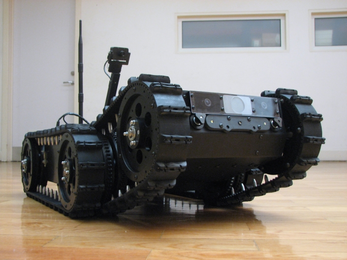

International Projects
 |
SIAR: Sewer Inspection Autonomous Robot (ECHORD++)The SIAR project is developing a fully autonomous ground robot able to autonomously navigate and inspect the sewage system with a minimal human interven tion, and with the possibility of manually controlling the vehicle or the sensor payload when required. The project uses as starting point IDMind's robot platform RaposaNG. A new robot has been built based on this know-how, with the following key steps bey ond the state of the art required to properly address the challenge: a robust IP67 robot frame designed to work in the hardest environmental conditions with increased power autonomy and flexible inspection capabilities; robust and increased communication capabilities; onboard autonomous navigation and inspection capabilities; usability and cost effectiveness of the developed solution.
|